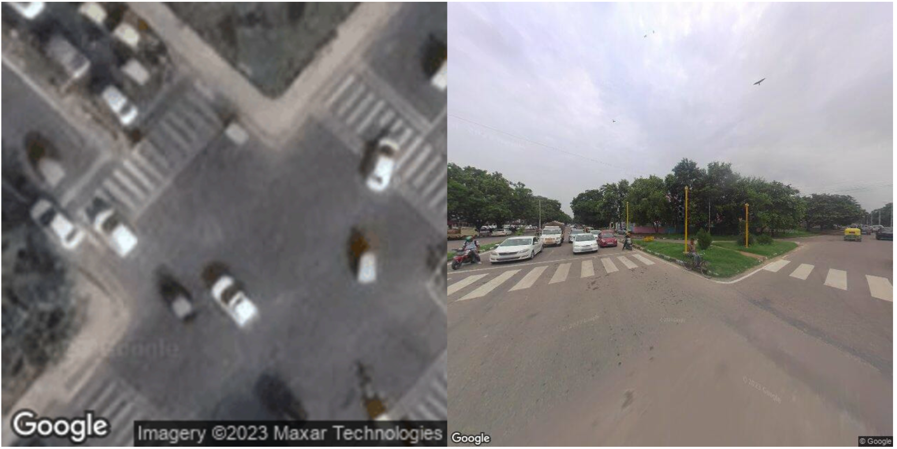

Crossings per km
-
Walkability Index
Walking shapes everyday life in a city. This dashboard highlights crossings, tree cover, and other street conditions that can make neighbourhoods safer, healthier, and more comfortable for people on foot.
Explorer
Crossings per km
-
Crossing points
-
Tree polygons
-
Map
Why It Matters

People are more likely to walk when streets feel safe, shaded, connected, and welcoming. Crossings help people move comfortably through busy roads, while tree cover can make walking cooler and more pleasant.
By comparing these signals across cities, the dashboard helps surface where pedestrian-friendly infrastructure is already strong and where there is room to improve the everyday walking experience.
Team
Pedestrian professor
Pedestrian Research Fellow
Partners